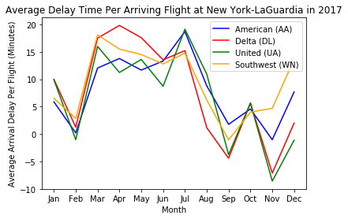
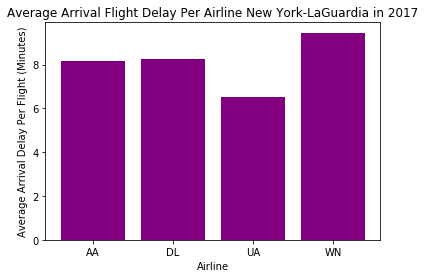
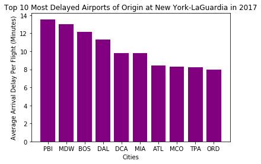
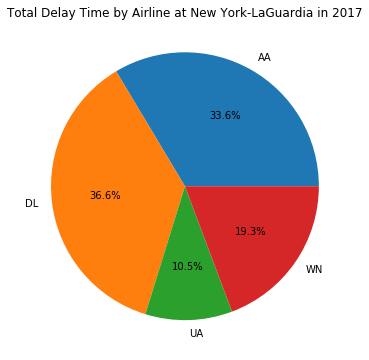
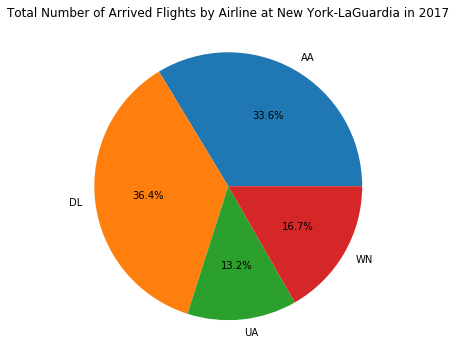

The above chart shows a general trend of average flight delays for flights arriving into LaGuardia airport in 2017. We can see that the four airlines generally have a similar month-by-month trend in average flight delays: February, September and November are the months where arrival delay is the shortest; in fact, some of the airlines have a negative arrival delay during these months, meaning that on average, flights operated by these airlines arrive earlier than scheduled. March through July, on the other hand, seems to be the time periods when flights delay the most, on average.
New York-LaGaurdia Airport Flight Delays Analysis
The source for all data shown below is Bureau of Transportation Statistics, U.S. Department of Transportation.
Click here for the GitHub repository for this project.


The above chart shows the average delay time for flights operated by these four airlines. We can see that American and Delta have very similar average arrival delay times, United has a slightly lower average arrival delay, and Southwest has a slightly higher average arrival delay. In general, the on-time performances at LGA for these four airlines are quite similar in 2017.

The above chart shows the top 10 longest average delay time for flights arriving at LGA in 2017, categorized by the flights' airport of origin. (A note for my statistical methodology here: since the original data has several one-off flights to several destinations, I filtered them out when processing the data and only included origin airports that have been appeared on the data for at least 1,000 times, since these one-off flights or seasonal flights are very likely to be outliers when considering the general on-time performances of airlines at LGA.) We can see that flights coming from PBI (West Palm Beach, FL) have the most arrival delay on average. It is interesting since PBI is not a very large airport (and thus should be less busy) and its location in Florida makes it less susceptible to weather-related delays on departure. Also interesting is that MDW (Chicago-Midway Airport, IL) and DAL (Dallas-Love Field Airport, TX) appear as number 2 and 4 on the list, respectively - both destinations are only serviced by Southwest out of the 4 airlines surveyed. It may correlate with Southwest's relatively higher average overall flight delay (as shown in the graph above this one).


The first graph above shows the portion of one airline's arrival delay in 2017 relative to the overall arrival delay (4 airlines combined). The second grpah shows the portion of flights that one airline operated into LGA in 2017 relative to the total number of flights for 4 airlines combined. We can see that the two graphs are very similar, in that the airline which operates more flights suffer from more delays; for American and Delta, the amount of delay of their flights is almost entirely proportional to the amount of flights they operated. The graph also reflects the data in the second graph of this page - United has slightly better on-time arrival performances than American and Delta, and Southwest has slightly worse on-time arrival performances than American and Delta at LGA in 2017.